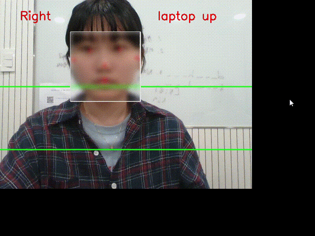
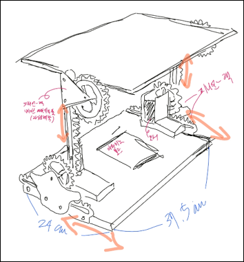
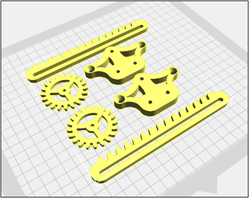
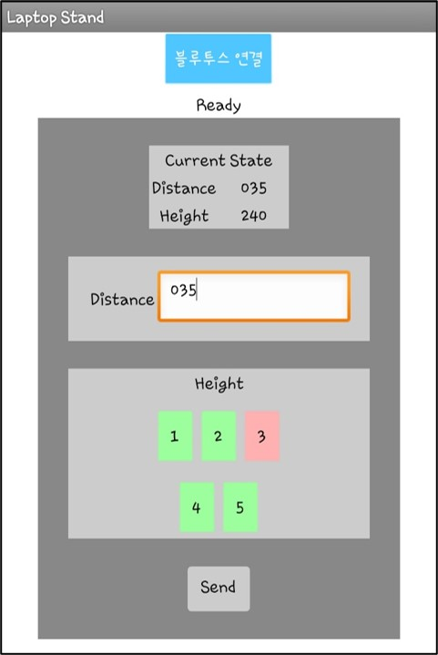

01 · OVERVIEW
프로젝트 개요
장시간 노트북 사용 시 잘못된 자세로 인해 발생하는 목·허리 통증 문제를 해결하고자 시작한 프로젝트입니다. 기존 노트북 스탠드는 높이를 수동으로 조절해야 하며, 사용자의 자세 변화에 실시간으로 대응할 수 없다는 한계가 있었습니다.
PC 웹캠으로 사용자의 얼굴을 실시간 감지하고 얼굴 크기(거리)와 위치(높이)를 분석해, Arduino가 서보 모터 4개를 제어하여 노트북 화면을 자동으로 최적 위치로 조정합니다. Android 앱을 통해 사용자가 원하는 앉는 거리와 화면 높이를 사전에 설정할 수 있습니다.
4인 팀 캡스톤 디자인 프로젝트로, HW 설계·임베디드 개발·Python SW·Android 앱 개발을 각자 분담하여 진행했습니다.
02 · SCREENS
주요 화면




03 · ARCHITECTURE
시스템 구조 및 데이터 흐름
Android 앱에서 초기 설정값을 Bluetooth로 Arduino에 전달하고, PC 웹캠의 얼굴 인식 결과를 Python이 분석하여 Serial 명령(a/b/c/d)을 Arduino로 전송합니다. Arduino는 PCA9685 PWM 드라이버를 통해 서보 모터 4개를 제어합니다.
(초기 설정)
(펌웨어)
× 4
(얼굴 감지)
(MediaPipe)
(펌웨어)
04 · FEATURES
주요 기능
05 · TROUBLE SHOOTING
문제 해결 과정
개발 중 마주쳤던 주요 기술적 문제와 해결 방법을 기록합니다.
문제: MediaPipe draw_detection()이 바운딩 박스 크기·중심점을 반환하지 않음
거리·높이 계산에는 얼굴 바운딩 박스의 높이(height)와 중심점(ctr_point) 값이 필요했으나, MediaPipe 기본 drawing_utils.py의 draw_detection() 함수는 이 값을 반환하지 않고 화면에 그리기만 했습니다. MediaPipe 패키지의 drawing_utils.py를 직접 수정해 draw_detection() 함수가 height와 ctr_point를 함께 반환하도록 변경했습니다. 수정된 파일을 프로젝트에 포함하여 사용자가 패키지 파일을 교체하는 방식으로 배포했습니다.
06 · RETROSPECTIVE
프로젝트 회고
MediaPipe 얼굴 인식과 Arduino 서보 모터 제어를 실시간으로 연동하는 전체 파이프라인을 구현했습니다. MIT App Inventor 앱으로 개인 맞춤 설정을 Bluetooth로 전송하는 구조까지 포함해, HW·SW·앱 세 레이어를 직접 연결한 완성도 높은 시스템을 완성했습니다.
3D 프린터로 제작한 부품의 내구성이 충분하지 않아 장기 사용 시 파손 위험이 있었습니다. 또한 노트북과 모터의 하중 배분이 고려되지 않아 무게 중심을 잡는 데 어려움이 있었으며, 이는 이후 설계 시 소재 선정과 하중 분석을 사전에 검토해야 함을 느꼈습니다.
MediaPipe의 내부 drawing_utils.py를 직접 수정하는 경험을 통해 오픈소스 라이브러리를 목적에 맞게 커스터마이징하는 역량을 키웠습니다. Python과 Arduino 간 시리얼 통신 설계, PCA9685 PWM 드라이버를 통한 서보 모터 다중 제어 구조를 실전에서 깊이 이해했습니다.
3D 프린트 부품을 내구성 있는 소재로 교체하고 하중 분석을 추가해 완성도를 높이고 싶습니다. 또한 얼굴 인식 알고리즘을 개선해 조명 변화와 안경 착용 상황에서도 안정적으로 동작하도록 고도화할 계획입니다.